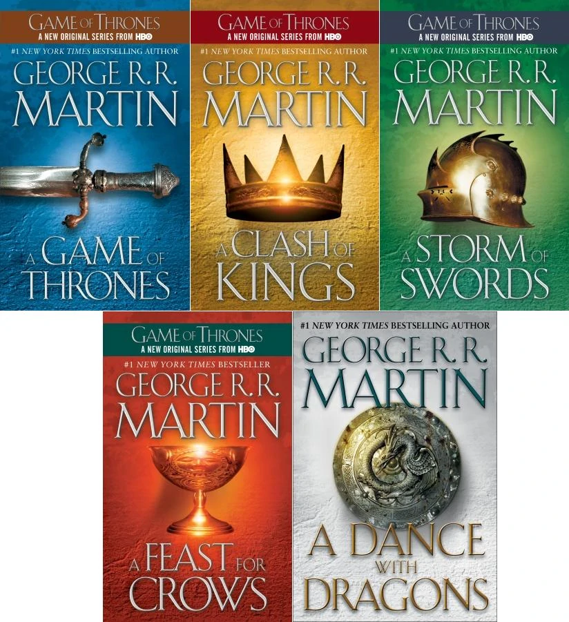
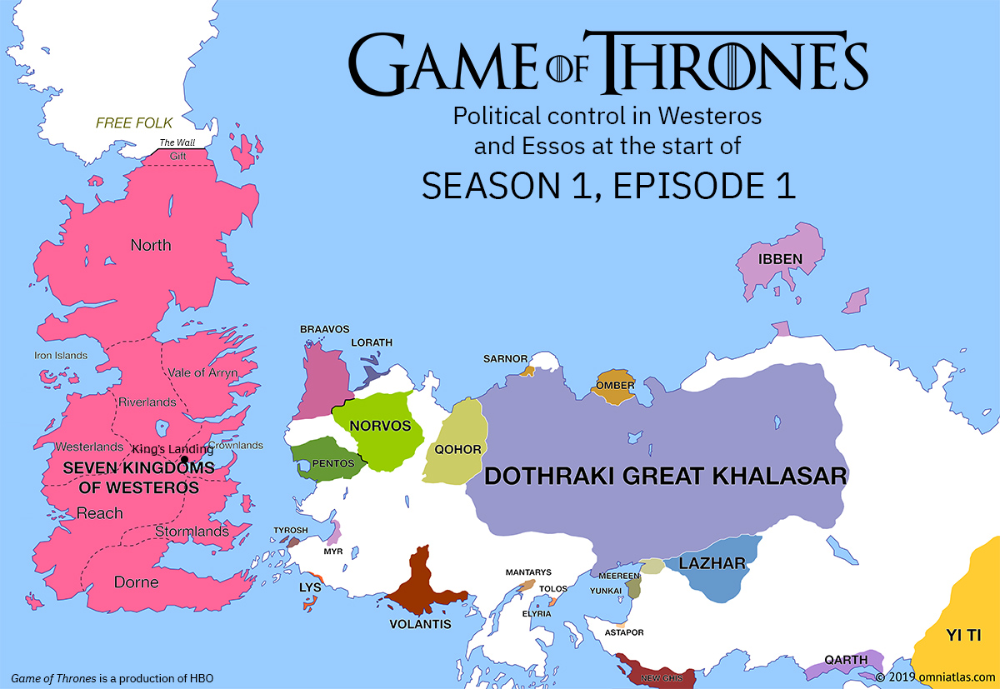
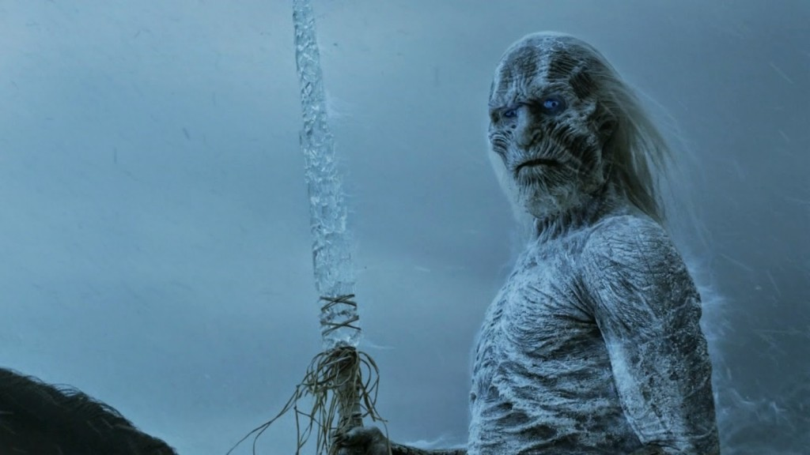
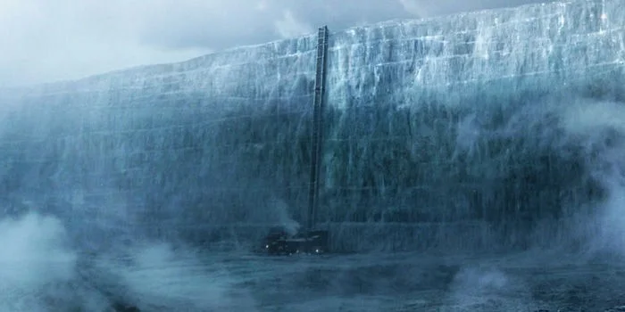
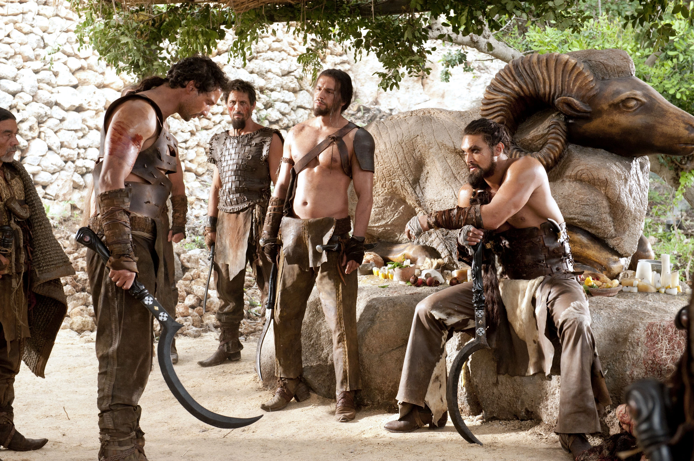

Take a look a litle introduction video before you start watching.
Some advices for beginners
- Whatch it with the highest quality possible
- It has the best opening titles ever
- Full explicit content and full of nudity
- Pay attention to the soundtrack

- season - A Game of Thrones
- season - A Clash of Kings
- season - A Storm of Swords
- season - A Storm of Swords
- season - A Feast for Crows, A Dance with Dragons and original content
- season - Outline from The Winds of Winter and original content
- season - Outline from A Dream of Spring and original content
- season - Outline from A Dream of Spring and original content
A list of season and which book are inspired by
-
The map when the history begins
 -
The white walkers
 -
The wall
 -
The dothraki
